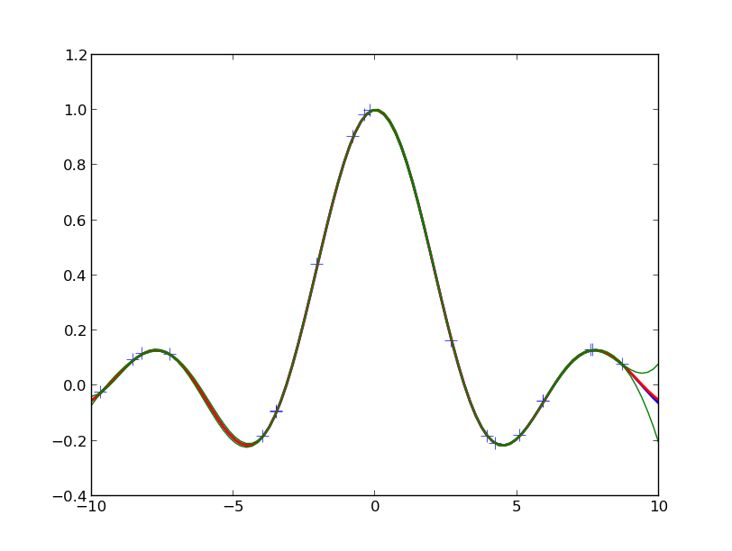

| note: | The documentation of best.gp is incomplete at the moment subject to change in the near future. The package includes lots research details that are not fully documented here. The user is adviced to use only what is discussed in this section and look at the code itself in case he wants to do something more excited. The code is at the moment not in a compete state. |
|---|
At the moment, best does not offer a class for performing simple Gaussian process regression (GPR) with 1D outputs. Instead it offers a way to do multi-output GP regression with a separable covariance function. The simple case is a subcase of this more general case. We will not get into the mathematical details of GPR. The user is adviced to consult:
The main class for performing GPR is MultioutputGaussianProcess. It can be trained either via Markov Chain Monte Carlo or Sequential Monte Carlo. However, knowledge of these topics is not required at this point since the object can be trained by itself. The current version uses internally a Squared Exponential Covariance with nuggets. In future versions, we will let the user supply the Covariance Functions. Both the length scales of Squared Exponential Covariance and the nuggets have Exponential prior distributions with parameters that can be specified. The mean of the model is assumed to be a Generalized Linear Model. The user must provide the design matrix.
| Inherits : | best.random.MarkovChainMonteCarlo |
|---|
Initialize the object.
| Parameters: | mgp (best.gp.MultioutputGaussianProcess) – If supplied then the object copies all the data from here. |
|---|
Inialize the object.
| Parameters: |
|
|---|
Take samples from the posterior of the hyper-parameters.
| Parameters: |
|
|---|---|
| Returns: | The current state of the MCMC (the hyper-parameters) and (optionally if return_eval_state) is set all data required to continue the algorithm. |
Evaluate the prediction at a given set of points.
The result of this function, is basically the predictive distribution, encoded in terms of the mean Y and the covariance matrix C.
| Parameters: |
|
|---|
Sample from the predictive distribution of the model.
| Parameters: |
|
|---|---|
| Returns: | If Y is None, then the sample will be returned. The trace of the covariance normalized by the number of spatial/time inputs and the outputs. This is a measure associated with the uncertainty of the given input point. |
Add more observations to the data set.
The routine currently only adds observations pertaining to the first component. Addition to the other components would ruin the Kronecker properties of the matrices.
| Parameters: |
|
|---|
Sample a surrogate surface.
Samples a surrogate surface that can be evaluated analytically. The procedure adds the design point with the maximum uncertainty defined by Eq. (19) of the paper and assuming a uniform input distribution until:
- we run of design points,
- or the <global> uncertainty satisfies a stopping criterion.
The global uncertainty is defined to be the average uncertainty of all design points. The stopping criterion is implemented as follows:
STOP if global uncertainty < rel_tol * init_unc or < abs_tol,
where init_unc is the initial uncertainty and rel_tol is a relative reduction and abs_tol is the absolute uncertainty we are willing to accept.
| Parameters: |
|
|---|
Evaluate the prediction at a given set of points.
Same as best.gp.MultioutputGaussianProcess.__call__() but we attemp to use sparse matrices.
Set/See if the nuggets are going to be sampled.
Set/See if the length scales are going to be sampled.
The logarithm of the likelihood of the current state.
Get the covariance function.
The number of MCMC steps per Gibbs setp.
Get the prior parameters for the length scales.
Get the prior parameters for the nuggets.
Get the proposal step for the length scales.
Get the proposal step for the nuggets.
Get the current nuggets.
Get the current length scales.
Get the output-correlation matrix.
Get the logarithm of the posterior likelihood.
Get the MCMC acceptance rate.
Typically, you would like to pick the hyper-parameters, observe the convergence of Markov Chain Monte Carlo or even use Sequential Monte Carlo to train the model. However, here is the simplest possible case we could run that works just fine with the default parameters:
import numpy as np
import matplotlib.pyplot as plt
from best.gp import MultioutputGaussianProcess
# Number of observations
num_obs = 20
# The noise we will add to the data (std)
noise = 1e-6
# Draw the observed input points randomly
X = -10. + 20. * np.random.rand(num_obs)
X = np.atleast_2d(X).T
# Draw the observations
Y = np.sin(X) / (X + 1e-6) + noise * np.random.randn(*X.shape)
# Construct the design matrix
H = np.ones(X.shape)
# Construct an MGP object
gp = MultioutputGaussianProcess()
gp.set_data(X, H, Y)
# Pick the hyper-parameters (length scales, nuggets)
hyp = np.array([1., 1e-6])
gp.initialize(hyp)
# Run 2000 MCMC steps
gp.sample(steps=2000)
# Get a function object (subject to change in the future)
f = gp
plt.plot(X, Y, '+', markersize=10)
x = np.linspace(-10, 10, 100)
x = np.atleast_2d(x).T
h = np.ones(x.shape)
fx, Cx = f(x, h, compute_covariance=True)
plt.plot(x, fx, 'b', linewidth=2)
plt.plot(x, np.sin(x) / (x + 1e-6), 'r', linewidth=2)
s2 = 2. * np.sqrt(np.diag(Cx)).reshape(fx.shape)
plt.plot(x, fx + s2, 'g')
plt.plot(x, fx - s2, 'g')
plt.show()
You should see something like the following figure:
The crosses are the observed data points. The red line is the true function from which the data are drawn. The blue line is the mean of the GPR prediction and the green lines indicated the 95% confidence intervals.
The class TreedMultioutputGaussianProcess implements an extension of the model we developed in (PAPER REFERENCE). This model is not trained directly on data, but it requires a best.maps.Solver object. It is used to construct a surrogate of the solver.
The following demo can be found in best/demo/test_treed_gp.py. It learns the output of a dynamical system with a discontinuity with respect to the initial conditions (see examples.ko.KOSolver). It uses active learning (Bayesian Experimental Design) to select the observed inputs:
if __name__ == '__main__':
import fix_path
from examples.ko import KOSolver
from best.gp import TreedMultioutputGaussianProcess
import numpy as np
import matplotlib.pyplot as plt
if __name__ == '__main__':
# Initialize the solver
solver = KOSolver(k=2, T=[0, 1], n_t=32)
# Initialize the treed GP
tmgp = TreedMultioutputGaussianProcess(solver=solver)
tmgp.num_xi_init = 10
tmgp.num_xi_test = 100
tmgp.num_max = 100
tmgp.num_elm_max = 20
tmgp.verbose = True
tmgp.model.sample_g = True
tmgp.model.num_mcmc = 1
tmgp.model.num_init = 100
# Initialial hyper-parameters
init_hyp = np.array([.1, .1, .1, 1e-1, 1e-1])
tmgp.init_hyp = init_hyp
tmgp.num_mcmc = 100
# Train
tmgp.train()
# Print the tree
print str(tmgp.tree)
# A fine scale solver to test our predictions
fine_solver = KOSolver(k=solver.k_of[0], n_t=50)
# Make predictions
for i in range(10):
xi = np.random.rand(1, solver.k_of[0])
X = [xi] + fine_solver.X_fixed
H = tmgp.mean_model(X)
n = np.prod([x.shape[0] for x in X])
Yp = np.ndarray((n, solver.q), order='F')
Vp = np.ndarray((n, solver.q), order='F')
tmgp(X, H, Yp, Vp)
Y = fine_solver(xi[0, :])
plt.plot(fine_solver.X_fixed[0], Y)
E = 2. * np.sqrt(Vp)
for i in range(solver.q):
plt.errorbar(fine_solver.X_fixed[0], Yp[:, i], yerr=E[:, i])
plt.show()
The plots you will see will look like the following:
The prediction of the treed Gaussian Process model for the response of the dynamical system as a function of time with error bars. This the prediction on a random input sample not used in the training data. The total number of observations was restricted to 100.